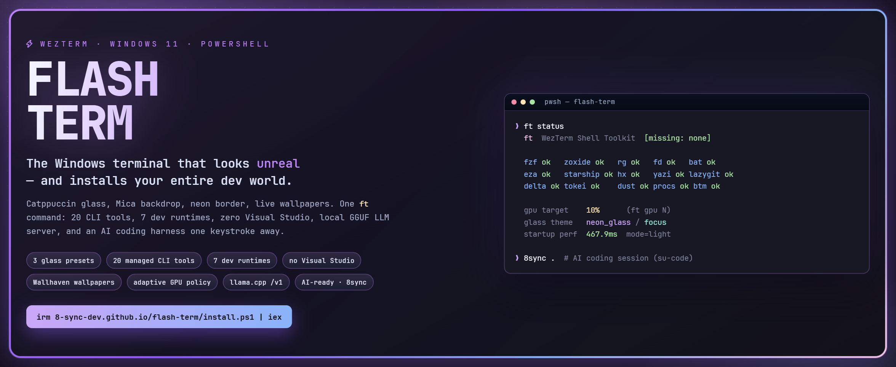
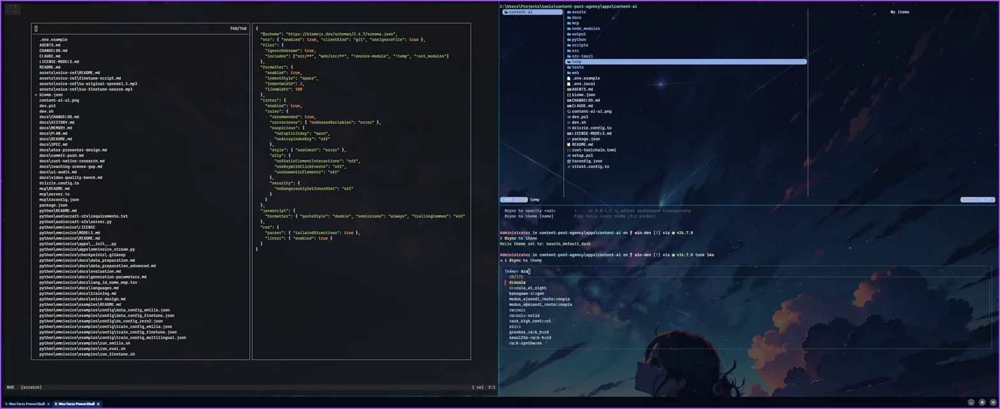
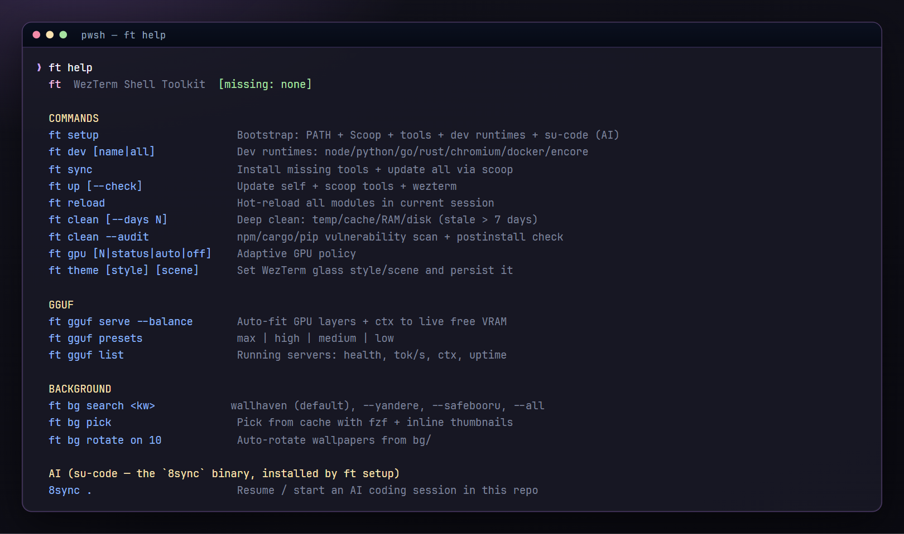
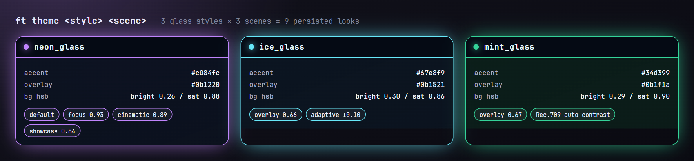
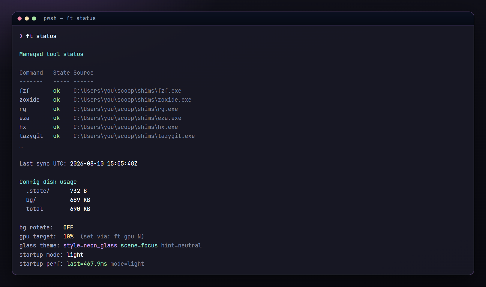

Kính mờ Catppuccin, wallpaper động, và một câu lệnh dựng trọn môi trường dev của bạn.
flash-term là cấu hình WezTerm cộng với lệnh ft: 3 style kính × 3 scene,
viền neon tím, nền Mica, 21 CLI tool được quản lý, 7 dev runtime không cần Visual Studio,
server GGUF llama.cpp local với endpoint tương thích OpenAI, và AI coding harness cách đúng một tổ hợp phím.
irm https://8-sync-dev.github.io/flash-term/install.ps1 | iex


Vừa đẹp vừa mạnh, trên Windows, không phải đi đường vòng qua build tools.
ft theme ghép 3 style kính (neon / ice / mint) với 3 scene (focus / cinematic /
showcase). Trạng thái lưu vào file Lua nhỏ và áp dụng nóng — không cần khởi động lại.
Palette màu từ Wallhaven được tính độ sáng Rec.709, chia nhóm sáng / trung tính / tối, rồi lớp kính dịch theo để chữ vẫn đọc được sau mỗi lần đổi ảnh.
8 phase có tên được đo mỗi lần boot, lưu vòng 40 lượt, cache tool thiếu 5 phút, cổng chặn 20 giây
giữa các tab, hoãn init prompt. ft status in ra số ms của lần boot cuối.
Rust dùng host triple GNU/MinGW với scoop gcc; Python là CPython standalone build sẵn
qua uv. Hai cái bẫy MSVC quen thuộc bị xử lý từ gốc.
Hơn 50 mục tiêu cache, ba lớp bảo vệ project/git kiểm tra lại trước mỗi lần xoá, và
--projects vốn không thể xoá. Kèm audit lỗ hổng npm/cargo/pip.
ft gguf serve --balance khớp số GPU layer và context theo VRAM trống thật, giảm 20%
khi GPU trên 75 °C, và mở /v1 cho mọi client OpenAI — kể cả 8sync.
Trình cài clone vào %USERPROFILE%\.config\wezterm rồi chạy ft setup.
irm https://8-sync-dev.github.io/flash-term/install.ps1 | iex
[1/5] core tools on PATH kiểm tra git · omp · wezterm
[2/5] Scoop + WezTerm, JetBrainsMono NF, PowerShell 7, CompletionPredictor
[3/5] managed tools 21 CLI tool qua Scoop
[4/5] dev runtimes node · python · go · rust · chromium · encore · docker
[5/5] AI harness trình cài su-code → lệnh `8sync`
ok xong — mở WezTerm và chạy ft help
Cờ: -ConfigDir <path> · -Update (chỉ pull) ·
-NoSetup (chỉ config) · -Branch / -Repo.
Bỏ bước: --no-tools · --no-dev · --no-harness · --check.
origin/main. Nếu bạn có sửa đổi cá nhân,
hãy dùng ft up self — nó tự stash rồi trả lại quanh lần pull fast-forward.15 lệnh, 10 nhóm tab completion, menu tự wrap theo bề rộng terminal.
| Lệnh | Làm gì |
|---|---|
ft setup | Bootstrap 5 bước |
ft sync [--check] | Cài thiếu + cập nhật 21 tool |
ft up [sucode] [--check] | Pull self ff-only, tool Scoop, binary AI su-code, phiên bản WezTerm |
ft reload | Nạp lại 14 module vào shell đang chạy |
ft dev all | Node · Python · Go · Rust · Chromium · Encore · Docker |
ft theme / ft gpu | Style + scene kính · chính sách GPU/FPS |
ft bg … | Tìm, chọn, đặt, xoay wallpaper |
ft clean … | Dọn ổ đĩa, audit chuỗi phụ thuộc |
ft gguf … | Server llama.cpp local + chat |
ft profile … | Profile terminal tách biệt kiểu Chrome |
ft hx … | Helix: theme, health, wrap, opacity |

Style quyết màu; scene quyết độ mờ; wallpaper quyết tương phản.

ft theme # style + scene hiện tại ft theme ice_glass # đổi style ft theme neon_glass cinematic ft bg search cyberpunk city # wallhaven, chỉ 4K+ ft bg pick # fzf + thumbnail chafa ft bg rotate on 10
Ba nguồn wallpaper (Wallhaven, yande.re, safebooru), chỉ SFW theo thiết kế,
điều kiện 4K trong mọi truy vấn, và ft bg set copy ảnh vào repo để wallpaper đi theo
config của bạn.

flash-term lo serve model. su-code (8sync) lo suy nghĩ.
ft gguf hint # checklist driver / CUDA / llama.cpp ft gguf serve --model-path model.gguf --balance # khớp layer + ctx theo VRAM trống ft gguf list # health, tok/s từ /metrics, uptime 8sync . # session AI coding trong repo này
| Preset | GPU layer | Thread | Context | Parallel | Batch | Flash-attn |
|---|---|---|---|---|---|---|
max | 99 | 2 | 32768 | 4 | 512 | có |
high | 32 | 4 | 16384 | 2 | 256 | có |
medium | 16 | 8 | 8192 | 1 | 128 | — |
low | 0 (CPU) | 16 | 4096 | 1 | 64 | — |
0.0.0.0 và không có auth. Trên mạng dùng chung hãy thêm
--host 127.0.0.1.Vì một README nói quá sẽ ngốn của bạn cả buổi chiều.
Windows 10/11, PowerShell 5.1+, dùng Scoop và winget.
Cài Scoop và TRIM/defrag cần admin. Docker cần WSL2 và mở GUI một lần.
ft gpu N chỉ hai trạng thái≥10 → HighPerformance + 165 FPS; <10 → LowPower + 120. Đây là công tắc chính sách, không phải sàn mức dùng GPU.
Wallpaper và lớp overlay nằm trên nó.
Độ trong bạn thấy phần lớn từ window_background_opacity. Không có acrylic/blur.
Xoay wallpaper và vòng dọn dẹp là poll lúc mở shell, không phải Task Scheduler — cửa sổ để yên sẽ không tự đổi ảnh.
ft clean xoá thậtChạy trơ ft clean sẽ xoá file cũ hơn
7 ngày. Nên --dry-run trước. node_modules, target/,
vendor/ không bao giờ bị chạm.
flash-term không chứa AI. ft setup cài
su-code — chủ sở hữu lệnh 8sync.